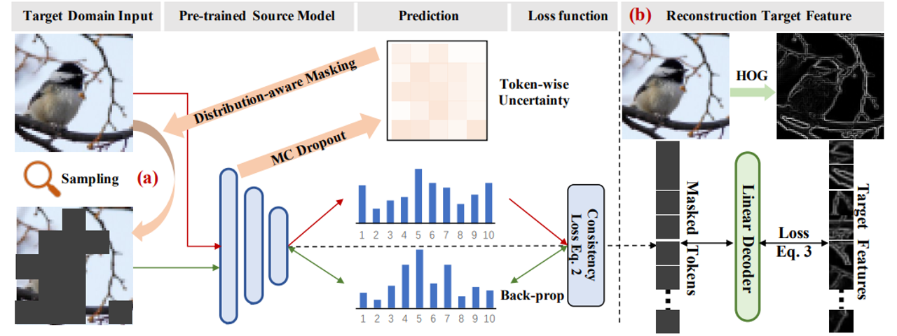

Publications

[CLS] Attention is All You Need for Training-Free Visual Token Pruning: Make VLM Inference Faster
Qizhe Zhang, Aosong Cheng, Ming Lu, Zhiyong Zhuo, Minqi Wang, Jiajun Cao, Shaobo Guo, Qi She, Shanghang Zhang†
Arxiv 2024 [Paper] [Code] [Website]
" We propose FasterVLM as a simple yet effective training-free token pruning method that evaluates the importance of visual tokens more accurately by [CLS] attentions, making VLM inference faster. "
Qizhe Zhang, Aosong Cheng, Ming Lu, Zhiyong Zhuo, Minqi Wang, Jiajun Cao, Shaobo Guo, Qi She, Shanghang Zhang†
Arxiv 2024 [Paper] [Code] [Website]
" We propose FasterVLM as a simple yet effective training-free token pruning method that evaluates the importance of visual tokens more accurately by [CLS] attentions, making VLM inference faster. "

Split & Merge: Unlocking the Potential of Visual Adapters via Sparse Training
Qizhe Zhang, Bocheng Zou, Ruichuan An, Jiaming Liu, Shanghang Zhang†
Arxiv 2023 [Paper] [Code]
" We propose Mixture of Sparse Adapters (MoSA) as a novel Adapter Tuning method to fully unleash the potential of each parameter in the adapter. MoSA can achieve significantly better performance than standard adapters without any additional computational or storage overhead. "
Qizhe Zhang, Bocheng Zou, Ruichuan An, Jiaming Liu, Shanghang Zhang†
Arxiv 2023 [Paper] [Code]
" We propose Mixture of Sparse Adapters (MoSA) as a novel Adapter Tuning method to fully unleash the potential of each parameter in the adapter. MoSA can achieve significantly better performance than standard adapters without any additional computational or storage overhead. "

Gradient-based Parameter Selection for Efficient Fine-Tuning
Zhi Zhang*, Qizhe Zhang*, Zijun Gao, Renrui Zhang, Ekaterina Shutova, Shiji Zhou, Shanghang Zhang†
CVPR 2024 [Paper] [Code]
" We propose a novel gradient-based parameter selection (GPS) method for effeicient fine-tuning. GPS does not introduce any additional storage or computational cost during both training and inference stages. Moreover, it possesses model-agnostic and task-adaptive properties, achieving outstanding performance. "
Zhi Zhang*, Qizhe Zhang*, Zijun Gao, Renrui Zhang, Ekaterina Shutova, Shiji Zhou, Shanghang Zhang†
CVPR 2024 [Paper] [Code]
" We propose a novel gradient-based parameter selection (GPS) method for effeicient fine-tuning. GPS does not introduce any additional storage or computational cost during both training and inference stages. Moreover, it possesses model-agnostic and task-adaptive properties, achieving outstanding performance. "

Adaptive Distribution Masked Autoencoders for Continual Test-Time Adaptation
Jiaming Liu*, Ran Xu*, Senqiao Yang*, Renrui Zhang†, Qizhe Zhang, Zehui Chen, Yandong Guo, Shanghang Zhang‡
CVPR 2024 [Paper] [Code] [Website]
" We propose Adaptive Distribution Masked Autoencoders (ADMA) as a novel continual self-supervised method. ADMA enhances the extraction of target domain knowledge while mitigating the accumulation of distribution shifts. "
Jiaming Liu*, Ran Xu*, Senqiao Yang*, Renrui Zhang†, Qizhe Zhang, Zehui Chen, Yandong Guo, Shanghang Zhang‡
CVPR 2024 [Paper] [Code] [Website]
" We propose Adaptive Distribution Masked Autoencoders (ADMA) as a novel continual self-supervised method. ADMA enhances the extraction of target domain knowledge while mitigating the accumulation of distribution shifts. "

Unsupervised Spike Depth Estimation via Cross-modality Cross-domain Knowledge Transfer
Jiaming Liu*, Qizhe Zhang*, Jianing Li, Ming Lu, Tiejun Huang, Shanghang Zhang†
ICRA 2024 [Paper] [Code]
" We propose a novel cross-modality cross-domain (BiCross) framework for unsupervised spike depth estimation. To be mentioned, we are the first to exploit the opensource RGB datasets to help unsupervised learning for spike depth estimation. "
Jiaming Liu*, Qizhe Zhang*, Jianing Li, Ming Lu, Tiejun Huang, Shanghang Zhang†
ICRA 2024 [Paper] [Code]
" We propose a novel cross-modality cross-domain (BiCross) framework for unsupervised spike depth estimation. To be mentioned, we are the first to exploit the opensource RGB datasets to help unsupervised learning for spike depth estimation. "

Exploring Sparse Visual Prompt for Cross-domain Semantic Segmentation
Senqiao Yang*, Jiarui Wu*, Jiaming Liu*, Xiaoqi Li, Qizhe Zhang, Mingjie Pan, Shanghang Zhang†
AAAI 2024 [Paper] [Code] [Website]
" We propose a novel Sparse Visual Domain Prompts (SVDP) approach for dense prediction TTA tasks, which holds minimal trainable parameters in the image-level prompt and reserves more spatial information of the input. "
Senqiao Yang*, Jiarui Wu*, Jiaming Liu*, Xiaoqi Li, Qizhe Zhang, Mingjie Pan, Shanghang Zhang†
AAAI 2024 [Paper] [Code] [Website]
" We propose a novel Sparse Visual Domain Prompts (SVDP) approach for dense prediction TTA tasks, which holds minimal trainable parameters in the image-level prompt and reserves more spatial information of the input. "